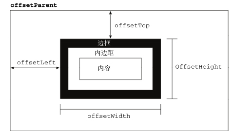
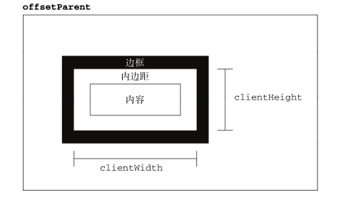
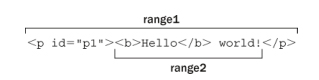
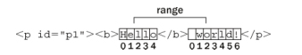
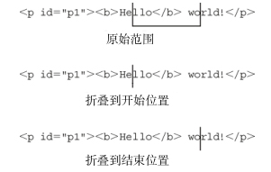

DOM1 级主要定义的是 HTML 和 XML 文档的底层结构。DOM2 和 DOM3 级则在这个结构 的基础上引入了更多的交互能力，也支持了更高级的 XML 特性。为此，DOM2 和 DOM3 级分为许多模块（模块之间具有某种关联） ，分别描述了 DOM 的某个非常具体的子集。这些模块 如下。
DOM2 级和 3 级的目的在于扩展 DOM API，以满足操作 XML 的所有需求，同时提供更好的错误处 理及特性检测能力。从某种意义上讲，实现这一目的很大程度意味着对命名空间的支持。 “DOM2 级核 心” 没有引入新类型， 它只是在 DOM1 级的基础上通过增加新方法和新属性来增强了既有类型。 “DOM3 级核心”同样增强了既有类型，但也引入了一些新类型。
类似地， “DOM2 级视图”和“DOM2 级 HTML”模块也增强了 DOM 接口，提供了新的属性和方 法。由于这两个模块很小，因此我们将把它们与“DOM2 级核心”放在一起，讨论基本 JavaScript 对象 的变化。可以通过下列代码来确定浏览器是否支持这些 DOM 模块。
var supportsDOM2Core = document.implementation.hasFeature("Core", "2.0");
var supportsDOM3Core = document.implementation.hasFeature("Core", "3.0");
var supportsDOM2HTML = document.implementation.hasFeature("HTML", "2.0");
var supportsDOM2Views = document.implementation.hasFeature("Views", "2.0");
var supportsDOM2XML = document.implementation.hasFeature("XML", "2.0");
本章只讨论那些已经有浏览器实现的部分， 任何浏览器都没有实现的部分将不作 讨论。
有了 XML 命名空间，不同 XML 文档的元素就可以混合在一起，共同构成格式良好的文档，而不 必担心发生命名冲突。从技术上说，HTML 不支持 XML 命名空间，但 XHTML 支持 XML 命名空间。 因此，本节给出的都是 XHTML 的示例。
命名空间要使用 xmlns 特性来指定。XHTML 的命名空间是 http://www.w3.org/1999/xhtml，在任何 格式良好 XHTML 页面中，都应该将其包含在 html 元素中，如下面的例子所示。
html xmlns="http://www.w3.org/1999/xhtml"
对这个例子而言，其中的所有元素默认都被视为 XHTML 命名空间中的元素。要想明确地为 XML 命名空间创建前缀，可以使用 xmlns 后跟冒号，再后跟前缀，如下所示。
Example XHTML page
Hello world!
上面例子为 XHTML 的命名空间定义了一个名为 xhtml 的前缀，并要求所有 XHTML 元素都以该前缀 开头。有时候为了避免不同语言间的冲突，也需要使用命名空间来限定特性，如下面的例子所示。
Example XHTML page
Hello world!
这个例子中的特性 class 带有一个 xhtml 前缀。在只基于一种语言编写 XML 文档的情况下，命 名空间实际上也没有什么用。不过，在混合使用两种语言的情况下，命名空间的用处就非常大了。来看一看下面这个混合了 XHTML 和 SVG 语言的文档：
Example XHTML page
在这个例子中，通过设置命名空间，将 svg 标识为了与包含文档无关的元素。此时， svg 元素的 所有子元素，以及这些元素的所有特性，都被认为属于 http://www.w3.org/2000/svg 命名空间。即 使这个文档从技术上说是一个 XHTML文档，但因为有了命名空间，其中的 SVG代码也仍然是有效的。
对于类似这样的文档来说，最有意思的事发生在调用方法操作文档节点的情况下。例如，在创建一 个元素时，这个元素属于哪个命名空间呢？在查询一个特殊标签名时，应该将结果包含在哪个命名空间 中呢？“DOM2 级核心”通过为大多数 DOM1 级方法提供特定于命名空间的版本解决了这个问题。
在 DOM2 级中， Node 类型包含下列特定于命名空间的属性。
DOM3 级在此基础上更进一步，又引入了下列与命名空间有关的方法。
DOM2 级中的 Document 类型也发生了变化，包含了下列与命名空间有关的方法。
“DOM2 级核心”中有关 Element 的变化，主要涉及操作特性。新增的方法如下。
除了第一个参数之外，这些方法与 DOM1 级中相关方法的作用相同；第一个参数始终都是一个命 名空间 URI。
NamedNodeMap 类型也新增了下列与命名空间有关的方法。由于特性是通过 NamedNodeMap 表示 的，因此这些方法多数情况下只针对特性使用。
由于一般都是通过元素访问特性，所以这些方法很少使用。
DocumentType 类型新增了 3 个属性： publicId 、 systemId 和 internalSubset 。其中，前两 个属性表示的是文档类型声明中的两个信息段，这两个信息段在 DOM1 级中是没有办法访问到的。
Document 类型的变化中唯一与命名空间无关的方法是 importNode() 。这个方法的用途是从一个 文档中取得一个节点，然后将其导入到另一个文档，使其成为这个文档结构的一部分。需要注意的是， 每个节点都有一个 ownerDocument 属性，表示所属的文档。如果调用 appendChild() 时传入的节点 属于不同的文档（ ownerDocument 属性的值不一样） ，则会导致错误。但在调用 importNode() 时传入 不同文档的节点则会返回一个新节点，这个新节点的所有权归当前文档所有。
importNode() 方法与 Element 的 cloneNode() 方法非常相似，它接受两个参数：要复 制的节点和一个表示是否复制子节点的布尔值。返回的结果是原来节点的副本，但能够在当前文档中使 用。来看下面的例子：
var newNode = document.importNode(oldNode, true); //导入节点及其所有子节点
document.body.appendChild(newNode);
这个方法在 HTML 文档中并不常用，在 XML 文档中用得比较多
“DOM2 级视图”模块添加了一个名为 defaultView 的属性，其中保存着一个指针，指向拥有给 定文档的窗口（或框架） 。除此之外， “视图”规范没有提供什么时候其他视图可用的信息，因而这是唯 一一个新增的属性。除 IE 之外的所有浏览器都支持 defaultView 属性。在 IE 中有一个等价的属性名 叫 parentWindow （Opera 也支持这个属性） 。因此，要确定文档的归属窗口，可以使用以下代码。
var parentWindow = document.defaultView || document.parentWindow;
除了上述一个方法和一个属性之外， “DOM2级核心” 还为 document.implementation 对象规定了 两个新方法： createDocumentType() 和 createDocument() 。 前者用于创建一个新的 DocumentType 节点，接受 3 个参数：文档类型名称、 publicId 、 systemId 。例如，下列代码会创建一个新的 HTML 4.01 Strict 文档类型。
var doctype = document.implementation.createDocumentType("html",
"-//W3C//DTD HTML 4.01//EN",
"http://www.w3.org/TR/html4/strict.dtd");
由于既有文档的文档类型不能改变，因此 createDocumentType() 只在创建新文档时有用；创建 新文档时需要用到 createDocument() 方法。这个方法接受 3 个参数：针对文档中元素的 namesp- aceURI 、文档元素的标签名、新文档的文档类型。下面这行代码将会创建一个空的新 XML 文档。
var doc = document.implementation.createDocument("", "root", null);
这行代码会创建一个没有命名空间的新文档，文档元素为 root ，而且没有指定文档类型。要想 创建一个 XHTML 文档，可以使用以下代码。
var doctype = document.implementation.createDocumentType("html",
" -//W3C//DTD XHTML 1.0 Strict//EN",
"http://www.w3.org/TR/xhtml1/DTD/xhtml1-strict.dtd");
var doc = document.implementation.createDocument("http://www.w3.org/1999/xhtml",
"html", doctype);
这样，就创建了一个带有适当命名空间和文档类型的新 XHTML 文档。不过，新文档当前只有文档 元素 html ，剩下的所有元素都需要继续添加。
“DOM2 级 HTML”模块也为 document.implementation 新增了一个方法，名叫 createHTML- Document() 。这个方法的用途是创建一个完整的 HTML 文档，包括 html 、 head 、 title 和 body>元素。这个方法只接受一个参数，即新创建文档的标题（放在 title 元素中的字符串） ，返回 新的 HTML 文档，如下所示：
var htmldoc = document.implementation.createHTMLDocument("New Doc");
alert(htmldoc.title); //"New Doc"
alert(typeof htmldoc.body); //"object"
通过调用 createHTMLDocument() 创建的这个文档，是 HTMLDocument 类型的实例，因而具有该 类型的所有属性和方法，包括 title 和 body 属性。只有 Opera 和 Safari 支持这个方法。
Node 类型中唯一与命名空间无关的变化， 就是添加了 isSupported() 方法。 与DOM1级为 docum- ent.implementation 引入的 hasFeature() 方法类似， isSupported() 方法用于确定当前节点具有 什么能力。这个方法也接受相同的两个参数：特性名和特性版本号。如果浏览器实现了相应特性，而且 能够基于给定节点执行该特性， isSupported() 就返回 true 。来看一个例子：
if (document.body.isSupported("HTML", "2.0")){
//执行只有"DOM2 级 HTML"才支持的操作
}
由于不同实现在决定对什么特性返回 true 或 false 时并不一致， 这个方法同样也存在与 hasFeature() 方法相同的问题。为此，我们建议在确定某个特性是否可用时，最好还是使用能力检测。
DOM3级引入了两个辅助比较节点的方法： isSameNode() 和 isEqualNode() 。这两个方法都接受 一个节点参数，并在传入节点与引用的节点相同或相等时返回 true 。所谓相同，指的是两个节点引用的 是同一个对象。所谓相等，指的是两个节点是相同的类型，具有相等的属性（ nodeName 、 nodeValue ， 等等） ， 而且它们的 attributes 和 childNodes 属性也相等 （相同位置包含相同的值） 。 来看一个例子。
var div1 = document.createElement("div");
div1.setAttribute("class", "box");
var div2 = document.createElement("div");
div2.setAttribute("class", "box");
alert(div1.isSameNode(div1)); //true
alert(div1.isEqualNode(div2)); //true
alert(div1.isSameNode(div2)); //false
这里创建了两个具有相同特性的 div元素。这两个元素相等，但不相同。
DOM3 级还针对为 DOM 节点添加额外数据引入了新方法。 其中， setUserData() 方法会将数据指 定给节点，它接受 3 个参数：要设置的键、实际的数据（可以是任何数据类型）和处理函数。以下代码 可以将数据指定给一个节点。
document.body.setUserData("name", "Nicholas", function(){});
然后，使用 getUserData() 并传入相同的键，就可以取得该数据，如下所示：
var value = document.body.getUserData("name");
传入 setUserData() 中的处理函数会在带有数据的节点被复制、删除、重命名或引入一个文档时 调用，因而你可以事先决定在上述操作发生时如何处理用户数据。处理函数接受 5 个参数：表示操作类 型的数值（1 表示复制，2 表示导入，3 表示删除，4 表示重命名） 、数据键、数据值、源节点和目标节 点。在删除节点时，源节点是 null ；除在复制节点时，目标节点均为 null 。在函数内部，你可以决定 如何存储数据。来看下面的例子。
var div = document.createElement("div");
div.setUserData("name", "Nicholas", function(operation, key, value, src, dest){
if (operation == 1){
dest.setUserData(key, value, function(){}); }
});
var newDiv = div.cloneNode(true);
alert(newDiv.getUserData("name")); //"Nicholas"
这里，先创建了一个 div 元素，然后又为它添加了一些数据（用户数据） 。在使用 cloneNode() 复制这个元素时，就会调用处理函数，从而将数据自动复制到了副本节点。结果在通过副本节点调用 getUserData() 时，就会返回与原始节点中包含的相同的值。
框架和内嵌框架分别用 HTMLFrameElement 和 HTMLIFrameElement 表示， 它们在 DOM2级中都有 了一个新属性，名叫 contentDocument 。这个属性包含一个指针，指向表示框架内容的文档对象。在此 之前，无法直接通过元素取得这个文档对象（只能使用 frames 集合） 。可以像下面这样使用这个属性。
var iframe = document.getElementById("myIframe");
var iframeDoc = iframe.contentDocument; //在 IE8 以前的版本中无效
由于 contentDocument 属性是 Document 类型的实例，因此可以像使用其他 HTML 文档一样使 用它，包括所有属性和方法。Opera、Firefox、Safari 和 Chrome 支持这个属性。IE8 之前不支持框架中 的 contentDocument 属性，但支持一个名叫 contentWindow 的属性，该属性返回框架的 window 对 象，而这个 window 对象又有一个 document 属性。因此，要想在上述所有浏览器中访问内嵌框架的文 档对象，可以使用下列代码。
var iframe = document.getElementById("myIframe");
var iframeDoc = iframe.contentDocument || iframe.contentWindow.document;
所有浏览器都支持 contentWindow 属性。
访问框架或内嵌框架的文档对象要受到跨域安全策略的限制。 如果某个框架中的 页面来自其他域或不同子域，或者使用了不同的协议，那么要访问这个框架的文档对 象就会导致错误。
在 HTML 中定义样式的方式有 3 种：通过 link 元素包含外部样式表文件、使用 style元素 定义嵌入式样式， 以及使用 style 特性定义针对特定元素的样式。 “DOM2级样式” 模块围绕这 3种应用 样式的机制提供了一套 API。要确定浏览器是否支持 DOM2级定义的 CSS能力，可以使用下列代码。
var supportsDOM2CSS = document.implementation.hasFeature("CSS", "2.0");
var supportsDOM2CSS2 = document.implementation.hasFeature("CSS2", "2.0");
任何支持 style 特性的 HTML 元素在 JavaScript 中都有一个对应的 style 属性。 这个 style 对象 是 CSSStyleDeclaration 的实例，包含着通过 HTML 的 style 特性指定的所有样式信息，但不包含 与外部样式表或嵌入样式表经层叠而来的样式。在 style 特性中指定的任何 CSS 属性都将表现为这个 style 对象的相应属性。对于使用短划线（分隔不同的词汇，例如 background-image ）的 CSS 属性 名，必须将其转换成驼峰大小写形式，才能通过 JavaScript 来访问。
由于 float 是 JavaScript 中的保留字，因此不能用作属性名。 “DOM2 级样式”规范规定 样式对象上相应的属性名应该是 cssFloat ；Firefox、Safari、Opera 和 Chrome 都支持这个属性，而 IE 支持的则是 styleFloat 。
“DOM2级样式” 规范还为 style 对象定义了一些属性和方法。 这些属性和方法在提供元素的 style 特性值的同时，也可以修改样式。下面列出了这些属性和方法。
通过 cssText 属性可以访问style特性中的CSS代码。 在读取模式下， cssText 返回浏览器对 style 特性中 CSS 代码的内部表示。在写入模式下，赋给 cssText 的值会重写整个 style 特性的值；也就是 说，以前通过 style 特性指定的样式信息都将丢失。例如，如果通过 style 特性为元素设置了边框， 然后再以不包含边框的规则重写 cssText ，那么就会抹去元素上的边框。下面是使用 cssText 属性的 一个例子。
myDiv.style.cssText = "width: 25px; height: 100px; background-color: green";
alert(myDiv.style.cssText);
设置 cssText 是为元素应用多项变化最快捷的方式，因为可以一次性地应用所有变化。 设计 length 属性的目的， 就是将其与 item() 方法配套使用， 以便迭代在元素中定义的 CSS 属性。 在使用 length 和 item() 时， style 对象实际上就相当于一个集合，都可以使用方括号语法来代替 item() 来取得给定位置的 CSS 属性，如下面的例子所示。
for (var i=0, len=myDiv.style.length; i < len; i++){
alert(myDiv.style[i]); //或者 myDiv.style.item(i)
}
无论是使用方括号语法还是使用 item() 方法，都可以取得 CSS 属性名（ "background-color" ， 不是 "backgroundColor" ） 。然后，就可以在 getPropertyValue() 中使用取得的属性名进一步取得 属性的值，如下所示。
var prop, value, i, len;
for (i=0, len=myDiv.style.length; i < len; i++){
prop = myDiv.style[i]; // 或者 myDiv.style.item(i)
value = myDiv.style.getPropertyValue(prop);
alert(prop + " : " + value);
}
getPropertyValue() 方法取得的始终都是 CSS 属性值的字符串表示。如果你需要更多信息，可 以使用 getPropertyCSSValue() 方法，它返回一个包含两个属性的 CSSValue 对象，这两个属性分 别是： cssText 和 cssValueType 。 其中， cssText 属性的值与 getPropertyValue() 返回的值相同， 而 cssValueType 属性则是一个数值常量，表示值的类型：0 表示继承的值，1 表示基本的值，2 表示 值列表，3 表示自定义的值。以下代码既输出 CSS 属性值，也输出值的类型。
var prop, value, i, len;
for (i=0, len=myDiv.style.length; i < len; i++){
prop = myDiv.style[i]; //或者 myDiv.style.item(i)
value = myDiv.style.getPropertyCSSValue(prop);
alert(prop + " : " + value.cssText + " (" + value.cssValueType + ")");
}
在实际开发中， getPropertyCSSValue() 使用得比 getPropertyValue() 少得多。IE9+、Safarie 3+以及 Chrome 支持这个方法。Firefox 7 及之前版本也提供这个访问，但调用总返回 null 。 要从元素的样式中移除某个 CSS 属性，需要使用 removeProperty() 方法。使用这个方法移除一 个属性，意味着将会为该属性应用默认的样式（从其他样式表经层叠而来） 。例如，要移除通过 style 特性设置的 border 属性，可以使用下面的代码。
myDiv.style.removeProperty("border");
在不确定某个给定的 CSS 属性拥有什么默认值的情况下， 就可以使用这个方法。 只要移除相应的属 性，就可以为元素应用默认值。
虽然 style 对象能够提供支持 style 特性的任何元素的样式信息，但它不包含那些从其他样式表 层叠而来并影响到当前元素的样式信息。 “DOM2 级样式”增强了 document.defaultView ，提供了 getComputedStyle() 方法。这个方法接受两个参数：要取得计算样式的元素和一个伪元素字符串（例 如 ":after" ） 。如果不需要伪元素信息，第二个参数可以是 null 。 getComputedStyle() 方法返回一 个 CSSStyleDeclaration 对象（与 style 属性的类型相同） ，其中包含当前元素的所有计算的样式。
IE 不支持 getComputedStyle() 方法，但它有一种类似的概念。在 IE 中，每个具有 style 属性 的元素还有一个 currentStyle 属性。这个属性是 CSSStyleDeclaration 的实例，包含当前元素全 部计算后的样式。取得这些样式的方式也差不多，如下面的例子所示。
var myDiv = document.getElementById("myDiv");
var computedStyle = myDiv.currentStyle;
alert(computedStyle.backgroundColor); //"red"
alert(computedStyle.width); //"100px"
alert(computedStyle.height); //"200px"
alert(computedStyle.border); //undefined
与 DOM 版本的方式一样，IE 也没有返回 border 样式，因为这是一个综合属性。
无论在哪个浏览器中，最重要的一条是要记住所有计算的样式都是只读的；不能修改计算后样式对 象中的 CSS 属性。此外，计算后的样式也包含属于浏览器内部样式表的样式信息，因此任何具有默认值 的 CSS 属性都会表现在计算后的样式中。例如，所有浏览器中的 visibility 属性都有一个默认值， 但这个值会因实现而异。在默认情况下，有的浏览器将 visibility 属性设置为 "visible" ，而有的 浏览器则将其设置为 "inherit" 。换句话说，不能指望某个 CSS 属性的默认值在不同浏览器中是相同 的。如果你需要元素具有某个特定的默认值，应该手工在样式表中指定该值。
CSSStyleSheet 类型表示的是样式表，包括通过 link元素包含的样式表和在 style 元素中定义 的样式表。有读者可能记得，这两个元素本身分别是由 HTMLLinkElement 和 HTMLStyleElement 类型 表示的。但是， CSSStyleSheet 类型相对更加通用一些，它只表示样式表，而不管这些样式表在 HTML 中是如何定义的。此外，上述两个针对元素的类型允许修改 HTML特性，但 CSSStyleSheet 对象则是一 套只读的接口（有一个属性例外） 。使用下面的代码可以确定浏览器是否支持 DOM2级样式表。
var supportsDOM2StyleSheets =
document.implementation.hasFeature("StyleSheets", "2.0");
CSSStyleSheet 继承自 StyleSheet ，后者可以作为一个基础接口来定义非 CSS 样式表。从 StyleSheet 接口继承而来的属性如下。
应用于文档的所有样式表是通过 document.styleSheets 集合来表示的。通过这个集合的 length 属性可以获知文档中样式表的数量，而通过方括号语法或 item() 方法可以访问每一个样式表。来看一个 例子。
var sheet = null;
for (var i=0, len=document.styleSheets.length; i < len; i++){
sheet = document.styleSheets[i];
alert(sheet.href);
}
以上代码可以输出文档中使用的每一个样式表的 href 属性（ style元素包含的样式表没有 href 属性） 。
不同浏览器的 document.styleSheets 返回的样式表也不同。所有浏览器都会包含 style元素 和 rel 特性被设置为 "stylesheet" 的 link元素引入的样式表。IE 和 Opera也包含 rel 特性被设置 为 "alternate stylesheet" 的 link 元素引入的样式表。
也可以直接通过 link 或 style 元素取得 CSSStyleSheet 对象。DOM 规定了一个包含 CSSStyleSheet 对象的属性，名叫 sheet ；除了 IE，其他浏览器都支持这个属性。IE 支持的是 styleSheet 属性。要想在不同浏览器中都能取得样式表对象，可以使用下列代码。
function getStyleSheet(element){
return element.sheet || element.styleSheet;
}
//取得第一个
元素引入的样式表
var link = document.getElementsByTagName("link")[0];
var sheet = getStylesheet(link);
这里的 getStyleSheet() 返回的样式表对象与 document.styleSheets 集合中的样式表对象相同。
CSSRule 对象表示样式表中的每一条规则。实际上， CSSRule 是一个供其他多种类型继承的基类 型，其中最常见的就是 CSSStyleRule 类型，表示样式信息（其他规则还有 @import 、 @font-face 、 @page 和 @charset ，但这些规则很少有必要通过脚本来访问） 。 CSSStyleRule 对象包含下列属性。
其中三个最常用的属性是 cssText 、 selectorText 和 style 。 cssText 属性与 style.cssText 属性类似，但并不相同。前者包含选择符文本和围绕样式信息的花括号，后者只包含样式信息（类似于 元素的 style.cssText ） 。此外， cssText 是只读的，而 style.cssText 也可以被重写。
使用这种方式，可以像确定元素的行内样式信息一样，确定与规则相关的样式信息。与使用元素的 方式一样，在这种方式下也可以修改样式信息，如下面的例子所示。
var sheet = document.styleSheets[0];
var rules = sheet.cssRules || sheet.rules; //取得规则列表
var rule = rules[0]; //取得第一条规则
rule.style.backgroundColor = "red"
DOM 规定，要向现有样式表中添加新规则，需要使用 insertRule() 方法。这个方法接受两个参 数：规则文本和表示在哪里插入规则的索引。下面是一个例子。
sheet.insertRule("body { background-color: silver }", 0); //DOM 方法
这个例子插入的规则会改变元素的背景颜色。插入的规则将成为样式表中的第一条规则（插入到了 位置 0） ——规则的次序在确定层叠之后应用到文档的规则时至关重要。 Firefox、 Safari、 Opera 和 Chrome 都支持 insertRule() 方法。
IE8 及更早版本支持一个类似的方法，名叫 addRule() ，也接收两必选参数：选择符文本和 CSS 样式信息；一个可选参数：插入规则的位置。在 IE 中插入与前面例子相同的规则，可使用如下代码。
sheet.addRule("body", "background-color: silver", 0); //仅对 IE 有效
有关这个方法的规定中说，最多可以使用 addRule() 添加 4 095 条样式规则。超出这个上限的调用 将会导致错误。
要以跨浏览器的方式向样式表中插入规则，可以使用下面的函数。这个函数接受 4 个参数：要向其 中添加规则的样式表以及与 addRule() 相同的 3 个参数，如下所示。
function insertRule(sheet, selectorText, cssText, position){
if (sheet.insertRule){
sheet.insertRule(selectorText + "{" + cssText + "}", position);
} else if (sheet.addRule){
sheet.addRule(selectorText, cssText, position);
}
}
下面是调用这个函数的示例代码。
insertRule(document.styleSheets[0], "body", "background-color: silver", 0);
虽然可以像这样来添加规则，但随着要添加规则的增多，这种方法就会变得非常繁琐。因此，如果 要添加的规则非常多，我们建议还是采用第 10 章介绍过的动态加载样式表的技术。
从样式表中删除规则的方法是 deleteRule() ，这个方法接受一个参数：要删除的规则的位置。例 如，要删除样式表中的第一条规则，可以使用以下代码。
sheet.deleteRule(0); //DOM 方法
IE 支持的类似方法叫 removeRule() ，使用方法相同，如下所示：
sheet.removeRule(0); //仅对 IE 有效
下面是一个能够跨浏览器删除规则的函数。第一个参数是要操作的样式表，第二个参数是要删除的 规则的索引。
function deleteRule(sheet, index){
if (sheet.deleteRule){
sheet.deleteRule(index);
} else if (sheet.removeRule){
sheet.removeRule(index);
}
}
调用这个函数的方式如下。
deleteRule(document.styleSheets[0], 0);
与添加规则相似，删除规则也不是实际 Web 开发中常见的做法。考虑到删除规则可能会影响 CSS 层叠的效果，因此请大家慎重使用。
本节介绍的属性和方法并不属于 “DOM2 级样式” 规范， 但却与 HTML 元素的样式息息相关。 DOM 中没有规定如何确定页面中元素的大小。IE 为此率先引入了一些属性，以便开发人员使用。目前，所有 主要的浏览器都已经支持这些属性。
首先要介绍的属性涉及偏移量（offset dimension） ，包括元素在屏幕上占用的所有可见的空间。元素 的可见大小由其高度、宽度决定，包括所有内边距、滚动条和边框大小（注意，不包括外边距） 。通过 下列 4 个属性可以取得元素的偏移量。
其中， offsetLeft 和 offsetTop 属性与包含元素有关，包含元素的引用保存在 offsetParent 属性中。 offsetParent 属性不一定与 parentNode 的值相等。例如， td 元素的 offsetParent 是 作为其祖先元素的 table元素，因为 table 是在 DOM层次中距 td 最近的一个具有大小的元素。
要想知道某个元素在页面上的偏移量，将这个元素的 offsetLeft 和 offsetTop 与其 offsetParent 的相同属性相加，如此循环直至根元素，就可以得到一个基本准确的值。以下两个函数就可以用于分别 取得元素的左和上偏移量。
function getElementLeft(element){
var actualLeft = element.offsetLeft;
var current = element.offsetParent;
while (current !== null){
actualLeft += current.offsetLeft;
current = current.offsetParent;
}
return actualLeft;
}
function getElementTop(element){
var actualTop = element.offsetTop;
var current = element.offsetParent;
while (current !== null){
actualTop += current. offsetTop;
current = current.offsetParent;
}
return actualTop;
}
这两个函数利用 offsetParent 属性在 DOM 层次中逐级向上回溯， 将每个层次中的偏移量属性 合计到一块。对于简单的 CSS 布局的页面，这两函数可以得到非常精确的结果。对于使用表格和内嵌 框架布局的页面， 由于不同浏览器实现这些元素的方式不同， 因此得到的值就不太精确了。 一般来说， 页面中的所有元素都会被包含在几个 div 元素中，而这些 div 元素的 offsetParent 又是 body元素， 所以 getElementLeft() 与 getElementTop() 会返回与 offsetLeft 和 offsetTop 相同的值。
所有这些偏移量属性都是只读的，而且每次访问它们都需要重新计算。因此，应 该尽量避免重复访问这些属性；如果需要重复使用其中某些属性的值，可以将它们保 存在局部变量中，以提高性能。
元素的客户区大小（client dimension） ，指的是元素内容及其内边距所占据的空间大小。有关客户区 大小的属性有两个： clientWidth 和 clientHeight 。其中， clientWidth 属性是元素内容区宽度加 上左右内边距宽度； clientHeight 属性是元素内容区高度加上上下内边距高度。下图形象地说明 了这些属性表示的大小。
从字面上看，客户区大小就是元素内部的空间大小，因此滚动条占用的空间不计算在内。最常用到 这些属性的情况，就是像第 8 章讨论的确定浏览器视口大小的时候。如下面的例子所示，要确定浏览器 视口大小，可以使用 document.documentElement 或 document.body （在 IE7 之前的版本中）的 clientWidth 和 clientHeight 。
function getViewport(){
if (document.compatMode == "BackCompat"){
return {
width: document.body.clientWidth,
height: document.body.clientHeight
};
} else {
return {
width: document.documentElement.clientWidth,
height: document.documentElement.clientHeight
};
}
}
这个函数首先检查 document.compatMode 属性，以确定浏览器是否运行在混杂模式。Safari 3.1 之前的版本不支持这个属性，因此就会自动执行 else 语句。Chrome、Opera 和 Firefox 大多数情况下都 运行在标准模式下， 因此它们也会前进到 else 语句。 这个函数会返回一个对象， 包含两个属性： width 和 height ；表示浏览器视口（ html或 body 元素）的大小。
与偏移量相似，客户区大小也是只读的，也是每次访问都要重新计算的。
滚动大小
滚动大小（scroll dimension） ，指的是包含滚动内容的元素的大小。有些元素（例如 html 元素） ，即使没有执行任何代码也能自动地添加滚动条；但另外一些元素，则需要通过 CSS 的 overflow 属性进行设置才能滚动。以下是 4 个与滚动大小相关的属性。
scrollWidth 和 scrollHeight 主要用于确定元素内容的实际大小。 例如， 通常认为 html 元素 是在 Web 浏览器的视口中滚动的元素（IE6 之前版本运行在混杂模式下时是 body 元素） 。因此，带有 垂直滚动条的页面总高度就是 document.documentElement.scrollHeight 。
对于 不 包含 滚动 条 的页 面而 言 ， scrollWidth 和 scrollHeight 与 clientWidth 和 clientHeight 之间的关系并不十分清晰。在这种情况下，基于 document.documentElement 查看 这些属性会在不同浏览器间发现一些不一致性问题，如下所述。
在确定文档的总高度时（包括基于视口的最小高度时） ，必须取得 scrollWidth/clientWidth 和 scrollHeight/clientHeight 中的最大值，才能保证在跨浏览器的环境下得到精确的结果。下面就 是这样一个例子。
var docHeight = Math.max(document.documentElement.scrollHeight,
document.documentElement.clientHeight);
var docWidth = Math.max(document.documentElement.scrollWidth,
document.documentElement.clientWidth);
注意，对于运行在混杂模式下的 IE，则需要用 document.body 代替 document.document- Element 。
通过 scrollLeft 和 scrollTop 属性既可以确定元素当前滚动的状态，也可以设置元素的滚动位 置。在元素尚未被滚动时，这两个属性的值都等于 0。如果元素被垂直滚动了，那么 scrollTop 的值 会大于 0，且表示元素上方不可见内容的像素高度。如果元素被水平滚动了，那么 scrollLeft 的值会 大于 0，且表示元素左侧不可见内容的像素宽度。这两个属性都是可以设置的，因此将元素的 scrollLeft 和 scrollTop 设置为 0，就可以重置元素的滚动位置。下面这个函数会检测元素是否位 于顶部，如果不是就将其回滚到顶部。
function scrollToTop(element){
if (element.scrollTop != 0){
element.scrollTop = 0;
}
}
这个函数既取得了 scrollTop 的值，也设置了它的值。
iE、Firefox 3+、Safari 4+、Opera 9.5及 Chrome为每个元素都提供了一个 getBoundingClientRect() 方 法。这个方法返回会一个矩形对象，包含 4 个属性： left 、 top 、 right 和 bottom 。这些属性给出了 元素在页面中相对于视口的位置。但是，浏览器的实现稍有不同。
对于不支持 getBoundingClientRect() 的浏览器，可以通过其他手段取得相同的信息。一般来 说， right 和 left 的差值与 offsetWidth 的值相等，而 bottom 和 top 的差值与 offsetHeight 相等。 而且， left 和 top 属性大致等于使用本章前面定义的 getElementLeft() 和 getElementTop() 函数取得的值。综合上述，就可以创建出下面这个跨浏览器的函数：
function getBoundingClientRect(element){
var scrollTop = document.documentElement.scrollTop;
var scrollLeft = document.documentElement.scrollLeft;
if (element.getBoundingClientRect){
if (typeof arguments.callee.offset != "number"){
var temp = document.createElement("div");
temp.style.cssText = "position:absolute;left:0;top:0;";
document.body.appendChild(temp);
arguments.callee.offset = -temp.getBoundingClientRect().top - scrollTop;
document.body.removeChild(temp);
temp = null;
}
var rect = element.getBoundingClientRect();
var offset = arguments.callee.offset;
return {
left: rect.left + offset,
right: rect.right + offset,
top: rect.top + offset,
bottom: rect.bottom + offset
};
} else {
var actualLeft = getElementLeft(element);
var actualTop = getElementTop(element);
return {
left: actualLeft - scrollLeft,
right: actualLeft + element.offsetWidth - scrollLeft,
top: actualTop - scrollTop,
bottom: actualTop + element.offsetHeight - scrollTop
}
}
}
这个函数在 getBoundingClientRect() 有效时，就使用这个原生方法，而在这个方法无效时则 使用默认的计算公式。在某些情况下，这个函数返回的值可能会有所不同，例如使用表格布局或使用滚 动元素的情况下。
由于这里使用了 arguments.callee ，所以这个方法不能在严格模式下使用。
“DOM2 级遍历和范围”模块定义了两个用于辅助完成顺序遍历 DOM结构的类型： NodeIterator 和 TreeWalker 。 这两个类型能够基于给定的起点对 DOM结构执行深度优先 （depth-first） 的遍历操作。 在与 DOM 兼容的浏览器中 （Firefox 1 及更高版本、 Safari 1.3 及更高版本、 Opera 7.6 及更高版本、 Chrome 0.2 及更高版本） ，都可以访问到这些类型的对象。IE 不支持 DOM 遍历。使用下列代码可以检测浏览器 对 DOM2 级遍历能力的支持情况。
var supportsTraversals = document.implementation.hasFeature("Traversal", "2.0");
var supportsNodeIterator = (typeof document.createNodeIterator == "function");
var supportsTreeWalker = (typeof document.createTreeWalker == "function");
NodeIterator 类型是两者中比较简单的一个，可以使用 document.createNodeIterator() 方 法创建它的新实例。这个方法接受下列 4 个参数。
whatToShow 参数是一个位掩码，通过应用一或多个过滤器（filter）来确定要访问哪些节点。这个 参数的值以常量形式在 NodeFilter 类型中定义，如下所示。
除了 NodeFilter.SHOW_ALL 之外，可以使用按位或操作符来组合多个选项，如下面的例子所示：
var whatToShow = NodeFilter.SHOW_ELEMENT | NodeFilter.SHOW_TEXT;
可以通过 createNodeIterator() 方法的 filter 参数来指定自定义的 NodeFilter 对象，或者 指定一个功能类似节点过滤器（node filter）的函数。每个 NodeFilter 对象只有一个方法，即 accept- Node() ；如果应该访问给定的节点，该方法返回 NodeFilter.FILTER_ACCEPT ，如果不应该访问给 定的节点，该方法返回 NodeFilter.FILTER_SKIP 。由于 NodeFilter 是一个抽象的类型，因此不能 直接创建它的实例。在必要时，只要创建一个包含 acceptNode() 方法的对象，然后将这个对象传入 createNodeIterator() 中即可。例如，下列代码展示了如何创建一个只显示 p 元素的节点迭代器。
var filter = {
acceptNode: function(node){
return node.tagName.toLowerCase() == "p" ?
NodeFilter.FILTER_ACCEPT :
NodeFilter.FILTER_SKIP;
}
};
var iterator = document.createNodeIterator(root, NodeFilter.SHOW_ELEMENT,
filter, false);
第三个参数也可以是一个与 acceptNode() 方法类似的函数，如下所示。
var filter = function(node){
return node.tagName.toLowerCase() == "p" ?
NodeFilter.FILTER_ACCEPT :
NodeFilter.FILTER_SKIP;
};
var iterator = document.createNodeIterator(root, NodeFilter.SHOW_ELEMENT,
filter, false);
一般来说，这就是在 JavaScript 中使用这个方法的形式，这种形式比较简单，而且也跟其他的 JavaScript 代码很相似。如果不指定过滤器，那么应该在第三个参数的位置上传入 null 。
下面的代码创建了一个能够访问所有类型节点的简单的 NodeIterator 。
var iterator = document.createNodeIterator(document, NodeFilter.SHOW_ALL,
null, false);
NodeIterator 类型的两个主要方法是 nextNode() 和 previousNode() 。顾名思义，在深度优先 的 DOM 子树遍历中， nextNode() 方法用于向前前进一步，而 previousNode() 用于向后后退一步。 在刚刚创建的 NodeIterator 对象中，有一个内部指针指向根节点，因此第一次调用 nextNode() 会 返回根节点。当遍历到 DOM子树的最后一个节点时， nextNode() 返回 null 。 previousNode() 方法 的工作机制类似。当遍历到 DOM 子树的最后一个节点，且 previousNode() 返回根节点之后，再次调 用它就会返回 null 。
以下面的 HTML 片段为例。
Hello world!
- List item 1
- List item 2
- List item 3
假设我们想要遍历 div 元素中的所有元素，那么可以使用下列代码。
var div = document.getElementById("div1");
var iterator = document.createNodeIterator(div, NodeFilter.SHOW_ELEMENT,
null, false);
var node = iterator.nextNode();
while (node !== null) {
alert(node.tagName); //输出标签名
node = iterator.nextNode();
}
在这个例子中， 第一次调用 nextNode() 返回 p 元素。 因为在到达 DOM子树末端时 nextNode() 返回 null ，所以这里使用了 while 语句在每次循环时检查对 nextNode() 的调用是否返回了 null 。 执行上面的代码会显示如下标签名：
DIV
P
B
UL
LI
LI
LI
如果只想返回遍历中遇到的 li 元素，只要使用一个过滤器 即可，如下面的例子所示。
var div = document.getElementById("div1");
var filter = function(node){
return node.tagName.toLowerCase() == "li" ?
NodeFilter.FILTER_ACCEPT :
NodeFilter.FILTER_SKIP;
};
var iterator = document.createNodeIterator(div, NodeFilter.SHOW_ELEMENT,
filter, false);
var node = iterator.nextNode();
while (node !== null) {
alert(node.tagName); //输出标签名
node = iterator.nextNode();
}
在这个例子中，迭代器只会返回 li 元素。
由于 nextNode() 和 previousNode() 方法都基于 NodeIterator 在 DOM 结构中的内部指针工 作，所以 DOM结构的变化会反映在遍历的结果中。
Firefox 3.5 之前的版本没有实现 createNodeIterator() 方法，但却支持下一 节要讨论的 createTreeWalker() 方法。
TreeWalker 是 NodeIterator 的一个更高级的版本。 除了包括 nextNode() 和 previousNode() 在内的相同的功能之外，这个类型还提供了下列用于在不同方向上遍历 DOM 结构的方法。
创建 TreeWalker 对象要使用 document.createTreeWalker() 方法，这个方法接受的 4 个参数 与 document.createNodeIterator() 方法相同：作为遍历起点的根节点、要显示的节点类型、过滤 器和一个表示是否扩展实体引用的布尔值。由于这两个创建方法很相似，所以很容易用 TreeWalker 来代替 NodeIterator ，如下面的例子所示。
var div = document.getElementById("div1");
var filter = function(node){
return node.tagName.toLowerCase() == "li"?
NodeFilter.FILTER_ACCEPT :
NodeFilter.FILTER_SKIP;
};
var walker= document.createTreeWalker(div, NodeFilter.SHOW_ELEMENT,
filter, false);
var node = iterator.nextNode();
while (node !== null) {
alert(node.tagName); //输出标签名
node = iterator.nextNode();
}
在这里， filter 可以返回的值有所不同。除了 NodeFilter.FILTER_ACCEPT 和 NodeFilter. FILTER_SKIP 之外，还可以使用 NodeFilter.FILTER_REJECT 。在使用 NodeIterator 对象时， NodeFilter.FILTER_SKIP 与 NodeFilter.FILTER_REJECT 的作用相同：跳过指定的节点。但在使 用 TreeWalker 对象时， NodeFilter.FILTER_SKIP 会跳过相应节点继续前进到子树中的下一个节点， 而 NodeFilter.FILTER_REJECT 则会跳过相应节点及该节点的整个子树。例如，将前面例子中的 NodeFilter.FILTER_SKIP 修改成 NodeFilter.FILTER_REJECT ，结果就是不会访问任何节点。这是 因为第一个返回的节点是 div ，它的标签名不是 "li" ，于是就会返回 NodeFilter.FILTER_REJECT ， 这意味着遍历会跳过整个子树。在这个例子中， div 元素是遍历的根节点，于是结果就会停止遍历。 当然， TreeWalker 真正强大的地方在于能够在 DOM 结构中沿任何方向移动。使用 TreeWalker 遍历 DOM 树，即使不定义过滤器，也可以取得所有 li 元素，如下面的代码所示。
var div = document.getElementById("div1");
var walker = document.createTreeWalker(div, NodeFilter.SHOW_ELEMENT, null, false);
walker.firstChild(); // 转到p
walker.nextSibling(); // 转到ul
var node = walker.firstChild(); // 转到第一个li
while (node !== null) {
alert(node.tagName);
node = walker.nextSibling();
}
因为我们知道 li 元素在文档结构中的位置，所以可以直接定位到那里，即使用 firstChild() 转到 p 元素， 使用 nextSibling() 转到 ul 元素， 然后再使用 firstChild() 转到第一个 li 元素。 注意，此处 TreeWalker 只返回元素（由传入到 createTreeWalker() 的第二个参数决定） 。因此，可 以放心地使用 nextSibling() 访问每一个 li 元素，直至这个方法最后返回 null 。
TreeWalker 类型还有一个属性，名叫 currentNode ，表示任何遍历方法在上一次遍历中返回的 节点。通过设置这个属性也可以修改遍历继续进行的起点，如下面的例子所示。
var node = walker.nextNode();
alert(node === walker.currentNode); //true
walker.currentNode = document.body; //修改起点
与 NodeIterator 相比， TreeWalker 类型在遍历 DOM 时拥有更大的灵活性。由于 IE 中没有对 应的类型和方法，所以使用遍历的跨浏览器解决方案非常少见。
为了让开发人员更方便地控制页面， “DOM2 级遍历和范围”模块定义了“范围” （range）接口。通 过范围可以选择文档中的一个区域，而不必考虑节点的界限（选择在后台完成，对用户是不可见的） 。 在常规的 DOM操作不能更有效地修改文档时，使用范围往往可以达到目的。Firefox、Opera、Safari 和 Chrome 都支持 DOM 范围。IE 以专有方式实现了自己的范围特性。
DOM2 级在 Document 类型中定义了 createRange() 方法。在兼容 DOM 的浏览器中，这个方法 属于 document 对象。使用 hasFeature() 或者直接检测该方法，都可以确定浏览器是否支持范围。
var supportsRange = document.implementation.hasFeature("Range", "2.0");
var alsoSupportsRange = (typeof document.createRange == "function");
如果浏览器支持范围，那么就可以使用 createRange() 来创建 DOM 范围，如下所示：
var range = document.createRange();
与节点类似，新创建的范围也直接与创建它的文档关联在一起，不能用于其他文档。创建了范围之 后，接下来就可以使用它在后台选择文档中的特定部分。而创建范围并设置了其位置之后，还可以针对 范围的内容执行很多种操作，从而实现对底层 DOM 树的更精细的控制。
每个范围由一个 Range 类型的实例表示，这个实例拥有很多属性和方法。下列属性提供了当前范 围在文档中的位置信息。
在把范围放到文档中特定的位置时，这些属性都会被赋值。
要使用范围来选择文档中的一部分，最简的方式就是使用 selectNode() 或 selectNodeContents() 。 这两个方法都接受一个参数，即一个 DOM 节点，然后使用该节点中的信息来填充范围。其中，selectNode() 方法选择整个节点，包括其子节点；而 selectNodeContents() 方法则只选择节点的 子节点。以下面的 HTML 代码为例。
Hello world!
我们可以使用下列代码来创建范围：
var range1 = document.createRange();
range2 = document.createRange();
p1 = document.getElementById("p1");
range1.selectNode(p1);
range2.selectNodeContents(p1);
这里创建的两个范围包含文档中不同的部分： rang1 包含 p元素及其所有子元素，而 rang2 包 含 b元素、文本节点 "Hello" 和文本节点 "world!" （如图） 。
在调用 selectNode() 时， startContainer 、 endContainer 和 commonAncestorContainer 都等于传入节点的父节点，也就是这个例子中的 document.body 。而 startOffset 属性等于给定节 点在其父节点的 childNodes 集合中的索引（在这个例子中是 1——因为兼容 DOM 的浏览器将空格算 作一个文本节点） ， endOffset 等于 startOffset 加 1（因为只选择了一个节点） 。
在调用 selectNodeContents() 时， startContainer 、 endContainer 和 commonAncestorConta- iner 等于传入的节点，即这个例子中的 p 元素。而 startOffset 属性始终等于 0，因为范围从给定节 点的第一个子节点开始。最后， endOffset 等于子节点的数量（ node.childNodes.length ） ，在这个例 子中是 2。
为了更精细地控制将哪些节点包含在范围中，还可以使用下列方法。
在调用这些方法时，所有属性都会自动为你设置好。不过，要想创建复杂的范围选区，也可以直接 指定这些属性的值。
要创建复杂的范围就得使用 setStart() 和 setEnd() 方法。这两个方法都接受两个参数：一个参 照节点和一个偏移量值。对 setStart() 来说，参照节点会变成 startContainer ，而偏移量值会变成 startOffset 。对于 setEnd() 来说，参照节点会变成 endContainer ，而偏移量值会变成 endOffset 。 可以使用这两个方法来模仿 selectNode() 和 selectNodeContents() 。来看下面的例子：
var range1 = document.createRange();
range2 = document.createRange();
p1 = document.getElementById("p1");
p1Index = -1;
i, len;
for (i=0, len=p1.parentNode.childNodes.length; i < len; i++) {
if (p1.parentNode.childNodes[i] == p1) {
p1Index = i;
break;
}
}
range1.setStart(p1.parentNode, p1Index);
range1.setEnd(p1.parentNode, p1Index + 1);
range2.setStart(p1, 0);
range2.setEnd(p1, p1.childNodes.length);
显然，要选择这个节点（使用 range1 ） ，就必须确定当前节点（ p1 ）在其父节点的 childNodes 集合中的索引。而要选择这个节点的内容（使用 range2 ） ，也不必计算什么；只要通过 setStart() 和 setEnd() 设置默认值即可。模仿 selectNode() 和 selectNodeContents() 并不是 setStart() 和 setEnd() 的主要用途，它们更胜一筹的地方在于能够选择节点的一部分。
假设你只想选择前面 HTML 示例代码中从 "Hello" 的 "llo" 到 "world!" 的 "o" ——很容易做到。 第一步是取得所有节点的引用，如下面的例子所示：
var p1 = document.getElementById("p1");
helloNode = p1.firstChild.firstChild;
worldNode = p1.lastChild;
实际上， "Hello" 文本节点是 p 元素的孙子节点，因为它本身是 b 元素的一个子节点。因此， p1.firstChild 取得的是 b ， 而 p1.firstChild.firstChild 取得的才是这个文本节点。 "world!" 文本节点是 p 元素的第二个子节点（也是最后一个子节点） ，因此可以使用 p1.lastChild 取得该节点。然后，必须在创建范围时指定相应的起点和终点，如下面的例子所示。
var range = document.createRange();
range.setStart(helloNode, 2);
range.setEnd(worldNode, 3);
因为这个范围的选区应该从 "Hello" 中 "e" 的后面开始，所以在 setStart() 中传入 helloNode 的同时，传入了偏移量 2（即 "e" 的下一个位置； "H" 的位置是 0） 。设置选区的终点时，在 setEnd() 中传入 worldNode 的同时传入了偏移量 3，表示选区之外的第一个字符的位置，这个字符是 "r" ，它的 位置是 3（位置 0 上还有一个空格） 。如图 。
由于 helloNode 和 worldNode 都是文本节点， 因此它们分别变成了新建范围的 startContainer 和 endContainer 。 此时 startOffset 和 endOffset 分别用以确定两个节点所包含的文本中的位置， 而不是用以确定子节点的位置（就像传入的参数为元素节点时那样） 。此时的 commonAncestor- Container 是 p 元素，也就是同时包含这两个节点的第一个祖先元素。
当然，仅仅是选择了文档中的某一部分用处并不大。但重要的是，选择之后才可以对选区进行操作。
第一个方法，也是最容易理解的方法，就是 deleteContents() 。这个方法能够从文档中删除范 围所包含的内容。例如：
var p1 = document.getElementById("p1");
helloNode = p1.firstChild.firstChild;
worldNode = p1.lastChild;
range = document.createRange();
range.setStart(helloNode, 2);
range.setEnd(worldNode, 3);
range.deleteContents();
执行以上代码后，页面中会显示如下 HTML 代码：
Herld!
由于范围选区在修改底层 DOM 结构时能够保证格式良好，因此即使内容被删除了，最终的 DOM 结构依旧是格式良好的。
与 deleteContents() 方法相似， extractContents() 也会从文档中移除范围选区。但这两个方 法的区别在于， extractContents() 会返回范围的文档片段。利用这个返回的值，可以将范围的内容 插入到文档中的其他地方。如下面的例子所示：
var p1 = document.getElementById("p1");
helloNode = p1.firstChild.firstChild;
worldNode = p1.lastChild;
range = document.createRange();
range.setStart(helloNode, 2);
range.setEnd(worldNode, 3);
var fragment = range.extractContents();
p1.parentNode.appendChild(fragment);
在这个例子中，我们将提取出来的文档片段添加到了文档 body 元素的末尾。 （记住，在将文档片 段传入 appendChild() 方法中时，添加到文档中的只是片段的子节点，而非片段本身。 ）结果得到如下 HTML 代码：
Herld!
llo wo
还一种做法，即使用 cloneContents() 创建范围对象的一个副本，然后在文档的其他地方插入该 副本。如下面的例子所示：
var p1 = document.getElementById("p1"),
helloNode = p1.firstChild.firstChild,
worldNode = p1.lastChild,
range = document.createRange();
range.setStart(helloNode, 2);
range.setEnd(worldNode, 3);
var fragment = range.cloneContents();
p1.parentNode.appendChild(fragment);
这个方法与 extractContents() 非常类似，因为它们都返回文档片段。它们的主要区别在于， cloneContents() 返回的文档片段包含的是范围中节点的副本，而不是实际的节点。执行上面的操作 后，页面中的 HTML 代码应该如下所示：
Hello world!
llo wo
有一点请读者注意，那就是在调用上面介绍的方法之前，拆分的节点并不会产生格式良好的文档片 段。换句话说，原始的 HTML 在 DOM 被修改之前会始终保持不变。
利用范围， 可以删除或复制内容， 还可以像前面介绍的那样操作范围中的内容。 使用 insertNode() 方法可以向范围选区的开始处插入一个节点。假设我们想在前面例子中的 HTML 前面插入以下 HTML 代码：
Inserted text
那么，就可以使用下列代码：
var p1 = document.getElementById("p1");
helloNode = p1.firstChild.firstChild;
worldNode = p1.lastChild;
range = document.createRange();
range.setStart(helloNode, 2);
range.setEnd(worldNode, 3);
var span = document.createElement("span");
span.style.color = "red";
span.appendChild(document.createTextNode("Inserted text"));
range.insertNode(span);
运行以上 JavaScript 代码，就会得到如下 HTML 代码：
HeInserted textllo world
注意， span 正好被插入到了 "Hello" 中的 "llo" 前面，而该位置就是范围选区的开始位置。还要 注意的是，由于这里没有使用上一节介绍的方法，结果原始的 HTML 并没有添加或删除 b 元素。使用 这种技术可以插入一些帮助提示信息，例如在打开新窗口的链接旁边插入一幅图像。
除了向范围内部插入内容之外， 还可以环绕范围插入内容， 此时就要使用 surroundContents() 方法。这个方法接受一个参数，即环绕范围内容的节点。在环绕范围插入内容时，后台会执行下列 步骤。
可以使用这种技术来突出显示网页中的某些词句，例如下列代码：
var p1 = document.getElementById("p1");
helloNode = p1.firstChild.firstChild;
worldNode = p1.lastChild;
range = document.createRange();
range.selectNode(helloNode);
var span = document.createElement("span");
span.style.backgroundColor = "yellow";
range.surroundContents(span);
会给范围选区加上一个黄色的背景。得到的 HTML 代码如下所示：
Hello world!
为了插入 span，范围必须包含整个 DOM选区（不能仅仅包含选中的 DOM 节点） 。
所谓折叠范围，就是指范围中未选择文档的任何部分。可以用文本框来描述折叠范围的过程。假设 文本框中有一行文本，你用鼠标选择了其中一个完整的单词。然后，你单击鼠标左键，选区消失，而光 标则落在了其中两个字母之间。同样，在折叠范围时，其位置会落在文档中的两个部分之间，可能是范 围选区的开始位置，也可能是结束位置。图 12-9 展示了折叠范围时发生的情形。
使用 collapse() 方法来折叠范围，这个方法接受一个参数，一个布尔值，表示要折叠到范围的哪 一端。参数 true 表示折叠到范围的起点，参数 false 表示折叠到范围的终点。要确定范围已经折叠完 毕，可以检查 collapsed 属性，如下所示：
range.collapse(true); //折叠到起点
alert(range.collapsed); //输出 true
检测某个范围是否处于折叠状态，可以帮我们确定范围中的两个节点是否紧密相邻。例如，对于下 面的 HTML 代码：
Paragraph 1
Paragraph 2
如果我们不知道其实际构成 （比如说， 这行代码是动态生成的） ， 那么可以像下面这样创建一个范围。
var p1 = document.getElementById("p1"),
p2 = document.getElementById("p2"),
range = document.createRange();
range.setStartAfter(p1);
range.setStartBefore(p2);
alert(range.collapsed); //输出 true在这个例子中，新创建的范围是折叠的，因为 p1 的后面和 p2 的前面什么也没有。
在有多个范围的情况下，可以使用 compareBoundaryPoints() 方法来确定这些范围是否有公共 的边界（起点或终点） 。这个方法接受两个参数：表示比较方式的常量值和要比较的范围。表示比较方 式的常量值如下所示。
compareBoundaryPoints() 方法可能的返回值如下： 如果第一个范围中的点位于第二个范围中的 点之前，返回 -1 ；如果两个点相等，返回 0 ；如果第一个范围中的点位于第二个范围中的点之后，返回 1 。来看下面的例子。
var range1 = document.createRange();
var range2 = document.createRange();
var p1 = document.getElementById("p1");
range1.selectNodeContents(p1);
range2.selectNodeContents(p1);
range2.setEndBefore(p1.lastChild);
alert(range1.compareBoundaryPoints(Range.START_TO_START, range2)); //0
alert(range1.compareBoundaryPoints(Range.END_TO_END, range2)); //1
在这个例子中， 两个范围的起点实际上是相同的， 因为它们的起点都是由 selectNodeContents() 方法设置的默认值来指定的。 因此， 第一次比较返回 0 。 但是， range2 的终点由于调用 setEndBefore() 已经改变了，结果是 range1 的终点位于 range2 的终点后面，因此第二次比较返回 1 。
可以使用 cloneRange() 方法复制范围。这个方法会创建调用它的范围的一个副本。
var newRange = range.cloneRange();
新创建的范围与原来的范围包含相同的属性，而修改它的端点不会影响原来的范围。
在使用完范围之后，最好是调用 detach() 方法，以便从创建范围的文档中分离出该范围。调用 detach() 之后，就可以放心地解除对范围的引用，从而让垃圾回收机制回收其内存了。来看下面的 例子。
range.detach(); //从文档中分离
range = null; //解除引用
在使用范围的最后再执行这两个步骤是我们推荐的方式。一旦分离范围，就不能再恢复使用了。
虽然 IE9 支持 DOM 范围，但 IE8 及之前版本不支持 DOM范围。不过，IE8 及早期版本支持一种类 似的概念，即文本范围（text range） 。文本范围是 IE 专有的特性，其他浏览器都不支持。顾名思义，文 本范围处理的主要是文本（不一定是 DOM节点） 。通过 body 、 button 、 input 和 textarea 等这几个元素，可以调用 createTextRange() 方法来创建文本范围。以下是一个例子：
var range = document.body.createTextRange();
像这样通过 document 创建的范围可以在页面中的任何地方使用 （通过其他元素创建的范围则只能 在相应的元素中使用） 。与 DOM 范围类似，使用 IE 文本范围的方式也有很多种。
选择页面中某一区域的最简单方式，就是使用范围的 findText() 方法。这个方法会找到第一次出 现的给定文本，并将范围移过来以环绕该文本。如果没有找到文本，这个方法返回 false ；否则返回 true 。同样，仍然以下面的 HTML 代码为例。
Hello world!
要选择 "Hello" ，可以使用下列代码。
var range = document.body.createTextRange();
var found = range.findText("Hello");
在执行完第二行代码之后，文本 "Hello" 就被包围在范围之内了。为此，可以检查范围的 text 属 性来确认（这个属性返回范围中包含的文本） ，或者也可以检查 findText() 的返回值——在找到了文 本的情况下返回值为 true 。例如：
alert(found); //true
alert(range.text); //"Hello"
还可以为 findText() 传入另一个参数，即一个表示向哪个方向继续搜索的数值。负值表示应该从 当前位置向后搜索， 而正值表示应该从当前位置向前搜索。 因此， 要查找文档中前两个 "Hello" 的实例， 应该使用下列代码。
var found = range.findText("Hello");
var foundAgain = range.findText("Hello", 1);
IE 中与 DOM 中的 selectNode() 方法最接近的方法是 moveToElementText() ， 这个方法接受一 个 DOM 元素，并选择该元素的所有文本，包括 HTML 标签。下面是一个例子。
var range = document.body.createTextRange();
var p1 = document.getElementById("p1");
range.moveToElementText(p1);
在文本范围中包含 HTML 的情况下，可以使用 htmlText 属性取得范围的全部内容，包括 HTML 和文本，如下面的例子所示。
alert(range.htmlText);
IE 的范围没有任何属性可以随着范围选区的变化而动态更新。不过，其 parentElement() 方法倒 是与 DOM 的 commonAncestorContainer 属性类似。
var ancestor = range.parentElement();
这样得到的父元素始终都可以反映文本选区的父节点。
在 IE 中创建复杂范围的方法，就是以特定的增量向四周移动范围。为此，IE 提供了 4 个方法： move() 、 moveStart() 、 moveEnd() 和 expand() 。这些方法都接受两个参数：移动单位和移动单位 的数量。其中，移动单位是下列一种字符串值。
通过 moveStart() 方法可以移动范围的起点，通过 moveEnd() 方法可以移动范围的终点，移动的 幅度由单位数量指定，如下面的例子所示。
range.moveStart("word", 2); //起点移动 2 个单词
range.moveEnd("character", 1); //终点移动 1 个字符
使用 expand() 方法可以将范围规范化。换句话说， expand() 方法的作用是将任何部分选择的文 本全部选中。例如，当前选择的是一个单词中间的两个字符，调用 expand("word") 可以将整个单词都 包含在范围之内。
而 move() 方法则首先会折叠当前范围（让起点和终点相等） ，然后再将范围移动指定的单位数量， 如下面的例子所示。
range.move("character", 5); //移动 5 个字符
调用 move() 之后，范围的起点和终点相同，因此必须再使用 moveStart() 或 moveEnd() 创建新 的选区。
在 IE 中操作范围中的内容可以使用 text 属性或 pasteHTML() 方法。如前所述，通过 text 属性 可以取得范围中的内容文本；但是，也可以通过这个属性设置范围中的内容文本。来看一个例子。
var range = document.body.createTextRange();
range.findText("Hello");
range.text = "Howdy";
如果仍以前面的 Hello World代码为例，执行以上代码后的 HTML 代码如下。
Howdy world!
注意，在设置 text 属性的情况下，HTML 标签保持不变。
要向范围中插入 HTML 代码，就得使用 pasteHTML() 方法，如下面的例子所示。
var range = document.body.createTextRange();
range.findText("Hello");
range.pasteHTML("Howdy");
执行这些代码后，会得到如下 HTML。
Howdy world!
不过，在范围中包含 HTML 代码时，不应该使用 pasteHTML() ，因为这样很容易导致不可预料的 结果——很可能是格式不正确的 HTML。
IE 为范围提供的 collapse() 方法与相应的 DOM 方法用法一样：传入 true 把范围折叠到起点， 传入 false 把范围折叠到终点。例如：
range.collapse(true); //折叠到起点
可惜的是，没有对应的 collapsed 属性让我们知道范围是否已经折叠完毕。为此，必须使用 boundingWidth 属性，该属性返回范围的宽度（以像素为单位） 。如果 boundingWidth 属性等于 0， 就说明范围已经折叠了：
var isCollapsed = (range.boundingWidth == 0);
此外，还有 boundingHeight 、 boundingLeft 和 boundingTop 等属性，虽然它们都不像 boundingWidth 那么有用，但也可以提供一些有关范围位置的信息。
IE 中的 compareEndPoints() 方法与 DOM 范围的 compareBoundaryPoints() 方法类似。这个 方法接受两个参数：比较的类型和要比较的范围。比较类型的取值范围是下列几个字符串值："StartToStart" 、 "StartToEnd" 、 "EndToEnd" 和 "EndToStart" 。这几种比较类型与比较 DOM范 围时使用的几个值是相同的。
同样与 DOM 类似的是， compareEndPoints() 方法也会按照相同的规则返回值，即如果第一个范 围的边界位于第二个范围的边界前面，返回 -1 ；如果二者边界相同，返回 0 ；如果第一个范围的边界位 于第二个范围的边界后面，返回 1 。仍以前面的 Hello World 代码为例，下列代码将创建两个范围，一个 选择 "Hello world!" （包括 b 标签） ，另一个选择 "Hello" 。
var range1 = document.body.createTextRange();
var range2 = document.body.createTextRange();
range1.findText("Hello world!");
range2.findText("Hello");
alert(range1.compareEndPoints("StartToStart", range2)); //0
alert(range1.compareEndPoints("EndToEnd", range2)); //1
由于这两个范围共享同一个起点，所以使用 compareEndPoints() 比较起点返回 0 。而 range1 的终点在 range2 的终点后面，所以 compareEndPoints() 返回 1 。
IE 中还有两个方法，也是用于比较范围的： isEqual() 用于确定两个范围是否相等， inRange() 用于确定一个范围是否包含另一个范围。下面是相应的示例。
var range1 = document.body.createTextRange();
var range2 = document.body.createTextRange();
range1.findText("Hello World");
range2.findText("Hello");
alert("range1.isEqual(range2): " + range1.isEqual(range2)); //false
alert("range1.inRange(range2):" + range1.inRange(range2)); //true
这个例子使用了与前面相同的范围来示范这两个方法。由于这两个范围的终点不同，所以它们不相 等，调用 isEqual() 返回 false 。由于 range2 实际位于 range1 内部，它的终点位于后者的终点之 前、起点之后，所以 range2 被包含在 range1 内部，调用 inRange() 返回 true 。
在 IE 中使用 duplicate() 方法可以复制文本范围，结果会创建原范围的一个副本，如下面的例子 所示。
var newRange = range.duplicate();
新创建的范围会带有与原范围完全相同的属性。
DOM2 级规范定义了一些模块，用于增强 DOM1 级。 “DOM2 级核心”为不同的 DOM 类型引入了 一些与 XML 命名空间有关的方法。这些变化只在使用 XML 或 XHTML 文档时才有用；对于 HTML文 档没有实际意义。除了与 XML 命名空间有关的方法外， “DOM2 级核心”还定义了以编程方式创建 Document 实例的方法，也支持了创建 DocumentType 对象。
“DOM2 级样式”模块主要针对操作元素的样式信息而开发，其特性简要总结如下。
“DOM2 级遍历和范围”模块提供了与 DOM结构交互的不同方式，简要总结如下。